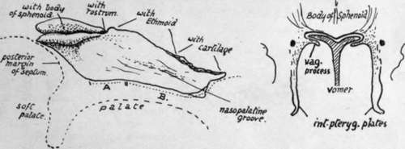

Vomer
Description
This section is from the book "The Anatomy Of The Human Skeleton", by J. Ernest Frazer. Also available from Amazon: The anatomy of the human skeleton.
Vomer
A thin bony plate, composed of two fused laminae, and situated in the lower part of the nasal septum. Its upper end is thickened to make two ala, which are splayed out under the body of the sphenoid and fit in between this and the vaginal plates of the internal pterygoid processes. The bone is covered by mucous membrane on both sides, and has, between it and the membrane, the naso-palatine nerve running forward and making the naso-palatine groove on it. Its posterior margin, thin but rounded, makes the free back edge of the bony septum, but this does not quite correspond with the edge of the complete septum, for the mucous membrane that forms the edge stands back from the bone (Fig. 190) for a little distance. The lower border rests on the septal crest made by the palate bones and maxillae. The antero-superior margin supports the perpendicular plate of the ethmoid in its upper part, and is usually fused with it after middle life, but in its front part its two plates are distinct and enclose between them the margin of the septal cartilage (see Fig. 193).
Fig. 190.-Vomer seen from the right, with outline of palate indicated by an interrupted line. A., area of palate bones supporting vomer ; II., region where it is carried on maxillx. The lower front corner, shown as a separate piece, projects slightly into the anterior palatine foramen. The small figure shows schematically how the ala? articulate with the lower surface of the sphenoid and fit in between it and the vaginal processes of the internal ptyergoid plates.
Development
A centre appears in membrane on each side of the septal part of the cartilaginous nasal capsule during the ninth week, and these join behind the cartilage to make the double bone in the course of a week or so. The bone thus formed is only a shallow trough in which the cartilaginous septum rests, and it separates this structure from the palate folds, and does not extend to the sphenoid or even into the " free edge " of the septum. It increases in size, but even at the beginning of the fourth month it is still in relation with the palate and has not effected any articulation with the sphenoid : this occurs during this month. The two laminae coalesce to a small extent in an upward and forward direction, the cartilage atrophying to a corresponding degree between them. The greater part of the depth of the bone, however, is the result of ossification in membrane extending downwards and backwards as the maxillary regions increase in height and the nasal fossae enlarge, so that the free edge of the bone, which is at first practically horizontal, becomes gradually directed obliquely as the structure increases in depth.
It has been stated that the anterior end of the vomer is formed from an ossification which involves the vomerine cartilage in part ; possibly this is associated with the small down-growth that projects from its front part into the upper opening of the anterior palatine foramen.
Continue to: